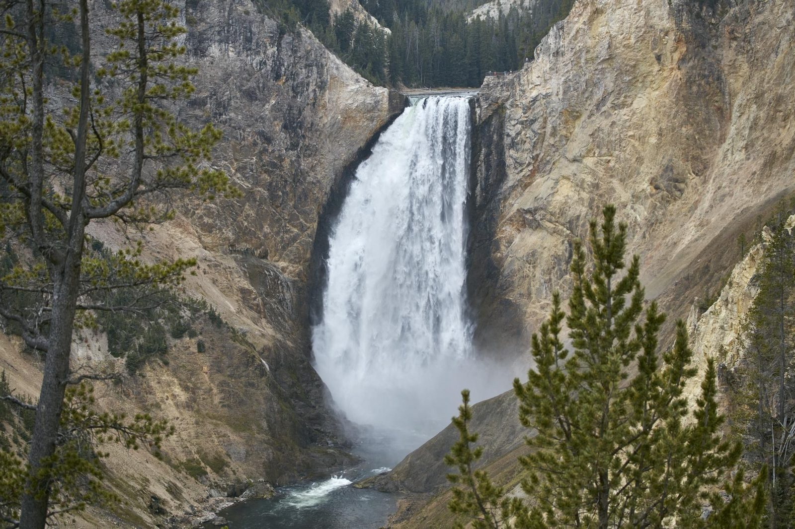
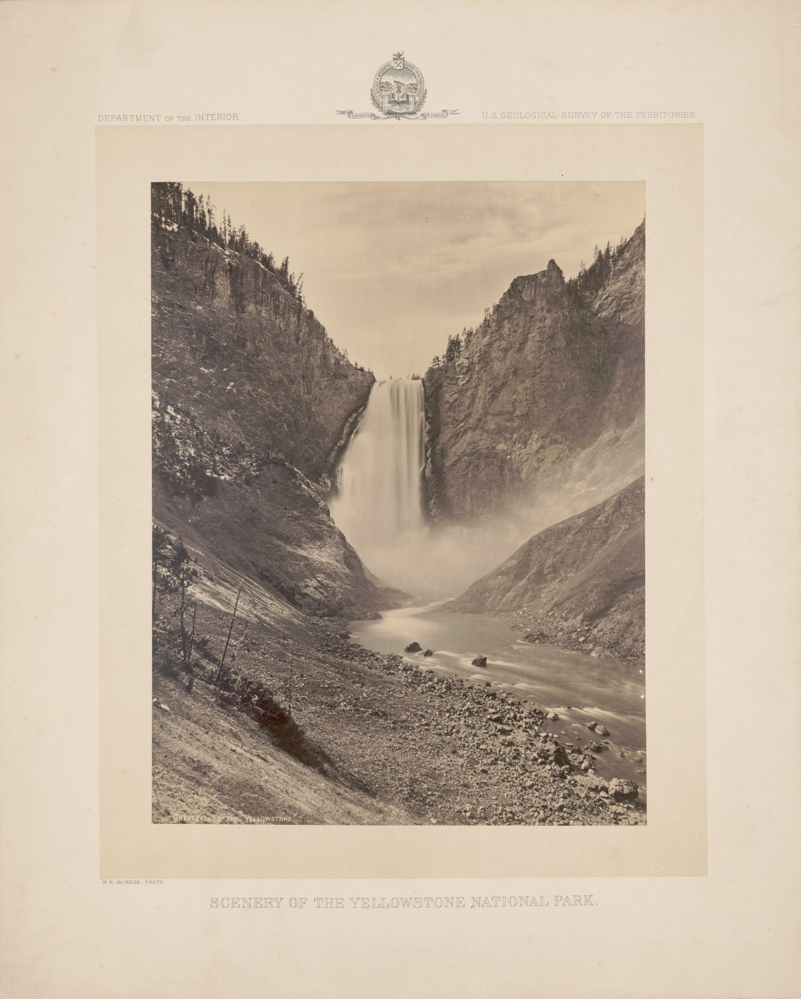

Nov 19, 2026
In 1872, while Wyoming was still a territory, Congress reserved the headwaters of the Yellowstone River as a public park for the people. President Ulysses S. Grant signed the law on March 1 of that year.

YELLOWSTONE, Wyo. — The Lower Falls of the Yellowstone River still drop into a deep canyon the way the falls did when a government survey party first carried pictures of the country to Congress. In 1872, Wyoming was still a territory, and Congress reserved a great tract of high country at the headwaters of the Yellowstone River. President Ulysses S. Grant signed the bill on March 1, 1872. The law created the world's first national park (leaves WyoVote).1 2
The act reserved the land "from settlement, occupancy, or sale." The statute set the tract apart "as a public park or pleasuring-ground for the benefit and enjoyment of the people." The statute described the tract as land in the Territories of Montana and Wyoming. The Secretary of the Interior was given charge of the park.1 2
People had used the Yellowstone country for about 11,000 years before any park law was written. The new statute did not invent the place. The statute only put a legal fence around ground that tribes and later travelers already knew.1 3
Lawmakers had help from the record. In 1871, Ferdinand V. Hayden led a government survey through the country. The party included the photographer William Henry Jackson and the painter Thomas Moran. Jackson's photographs, Moran's paintings, and Hayden's report reached Congress after the 1871 expedition returned. The wonders on the page did the work that a long speech often cannot.1 3

Most of the park, about 96 percent, lies in Wyoming, with smaller parts in Montana and Idaho. The reserved ground covers about 3,500 square miles. Geysers, canyons, and a high mountain lake sit inside those lines.3 4
The early years were thin on money and help. Congress created the park, then for several years left the park short of funds. On Aug. 20, 1886, the Army was called in to guard the park. Congress created the National Park Service (leaves WyoVote) on Aug. 25, 1916. The new service took over the work in Yellowstone in 1918.1 3
A traveler who stands at the Lower Falls, or watches a geyser throw its steam, is looking at the same country William Henry Jackson photographed for Congress. The legal fence Congress built around that country is still standing.
Credits
- National Park Service — Birth of a National Park (President Ulysses S. Grant signed the Yellowstone National Park Protection Act on March 1, 1872, creating the world's first national park; the act reserved the land from settlement, occupancy, or sale and set the tract apart as a public park or pleasuring-ground for the benefit and enjoyment of the people; Ferdinand V. Hayden's 1871 survey, with photographs by William Henry Jackson and paintings by Thomas Moran, informed Congress; Congress at first provided little money for the park; the U.S. Army took charge on Aug. 20, 1886; the National Park Service Organic Act was approved Aug. 25, 1916; rangers took over the park in 1918). https://www.nps.gov/yell/learn/historyculture/yellowstoneestablishment.htm (leaves WyoVote) . National Park Service — Legal Foundations of Yellowstone (official 1872 act text, including the Territories of Montana and Wyoming and the charge given to the Secretary of the Interior; more than 11,000 years of human history; National Park Service Organic Act approved Aug. 25, 1916). https://www.nps.gov/yell/learn/management/legal-foundations.htm (leaves WyoVote)
- U.S. Government Publishing Office — 17 Stat. 32 (Act of March 1, 1872, ch. 24, "An Act to set apart a certain Tract of Land lying near the Head-waters of the Yellowstone River as a public Park": tract of land in the Territories of Montana and Wyoming reserved and withdrawn from settlement, occupancy, or sale and set apart as a public park or pleasuring-ground for the benefit and enjoyment of the people; exclusive control given to the Secretary of the Interior). https://www.govinfo.gov/content/pkg/STATUTE-17/pdf/STATUTE-17-Pg32.pdf (leaves WyoVote) and https://www.govinfo.gov/content/pkg/STATUTE-17/pdf/STATUTE-17-Pg33.pdf (leaves WyoVote) . National Archives — An Act to Create Yellowstone National Park, March 1, 1872 (President Grant signed the act, creating the first national park). https://www.archives.gov/legislative/features/national-park-service/yellowstone.html (leaves WyoVote) . State of Wyoming — Chronology (Wyoming Territory created July 25, 1868; Yellowstone Park, first national park, created 1872; Wyoming Territory admitted as the 44th state on July 10, 1890). https://www.wyo.gov/about-wyoming/wyoming-history/chronology (leaves WyoVote)
- WyoHistory.org — Tamsen Emerson Hert, "Yellowstone, the World's Wonderland" (Nov. 8, 2014): Hayden's 1871 expedition, with William Henry Jackson and Thomas Moran; Grant signed the act March 1, 1872, establishing the world's first national park; about 3,500 square miles, 96 percent in Wyoming, 3 percent in Montana, and 1 percent in Idaho; evidence of human occupation for about 11,000 years; Congress at first failed for several years to appropriate funds; the Army took charge Aug. 20, 1886; the National Park Service was established Aug. 25, 1916, and took over administration in 1918. https://www.wyohistory.org/encyclopedia/yellowstone-worlds-wonderland (leaves WyoVote) . National Park Service — Expeditions Explore Yellowstone (Ferdinand V. Hayden led the 1871 survey; photographs by William Henry Jackson and art by Thomas Moran; human history of the Yellowstone region goes back more than 11,000 years). https://www.nps.gov/yell/learn/historyculture/expeditions.htm (leaves WyoVote)
- National Park Service — Yellowstone Park Facts (established March 1, 1872, as the world's first national park; 3,472 square miles; 96 percent in Wyoming, 3 percent in Montana, and 1 percent in Idaho; more than 500 active geysers; Yellowstone Lake; Lower Falls of the Yellowstone River). https://www.nps.gov/yell/planyourvisit/parkfacts.htm (leaves WyoVote) . WyoHistory.org — Tamsen Emerson Hert, "Yellowstone, the World's Wonderland" (nearly 3,500 square miles; 96 percent in Wyoming, 3 percent in Montana, and 1 percent in Idaho; striking scenery, topography, and thermal features). https://www.wyohistory.org/encyclopedia/yellowstone-worlds-wonderland (leaves WyoVote)